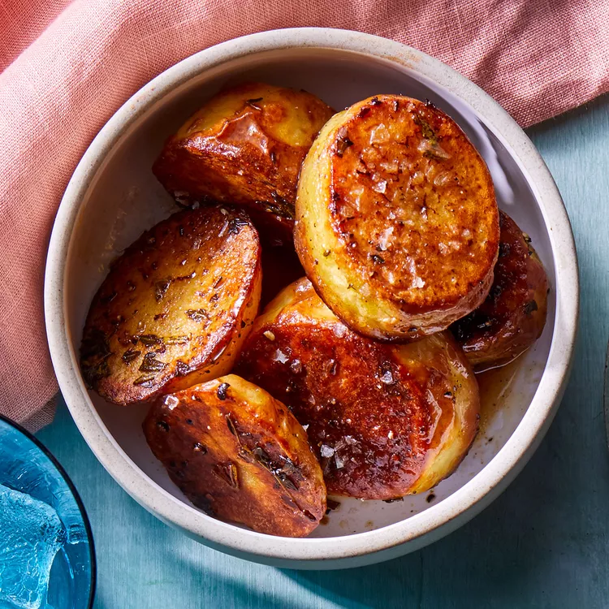

Melting Potatoes Recipe

Melting Potatoes
These melting potatoes are aptly named, as high-heat roasting creates a crispy exterior, while a final broth addition makes them extra creamy. Serve them with roasted chicken and a salad for dinner.
Ingredients
- 2 pounds Yukon Gold potatoes, peeled and cut into 1-inch slices
- 2 tablespoons butter, melted
- 2 tablespoons extra-virgin olive oil
- 2 tablespoons chopped fresh rosemary
- 1 teaspoon chopped fresh rosemary
- 3/4 teaspoon salt
- 1/2 teaspoon ground pepper
- 1 cup low-sodium vegetable broth or chicken broth
- 5 clove garlic, peeled and smashed
Steps
- Position rack in upper 3rd of oven; preheat to 500°F.
- Toss potatoes, butter oil, thyme, rosemary, salt and pepper in a large bowl. Arrange in a single layer in a 9-by-13-inch metal baking pan. (Do not use a glass dish, which could shatter.) Roast, flipping once, until browned, about 30 minutes.
- Carefully add broth and garlic to the pan. Continue roasting until most of the broth is absorbed and the potatoes are very tender, about 15 minutes more. Serve hot.
Back to Home